Solutions
1) Five grams of activated gram has the surface area equal to?
A) Football Field << Correct
B) I-10
C) Textbook
D) Rubix Cube
E) Basketball Court
2) Which one of the following cannot be adsorbed by activated carbon?
A) Chloroform
B) Volatile Organic Compounds
C) Radon
D) Glycols << Correct
E) Pesticides
3) Which material can be used to manufacture activated carbon?
A) Coal << Correct
B) Nickel
C) Hydrogen
D) Strong Acids
E) Sodium
4) What are the most commonly used forms of activated carbon?
A) Extruded AC and Powdered AC
B) Impregnated AC and Granular AC
C) Extruded AC and Polymer Coated AC
D) Granular AC and Powdered AC << Correct
E) Impregnated AC and Extruded AC
5) Which property describes the decolorizing performance of activated carbon?
A) Iodine Number
B) Molasses Number<< Correct
C) Methylene Blue
D) Tannin
E) Apparent Density
6) Out of the following choices, which raw material used to manufacture activated carbon will yield the highest Iodine Number?
A) Coconut << Correct
B) Coal
C) Lignite
D) Wood
E) Blood
7) Why is yielding a high Iodine Number beneficial?
A) It shows the adsorption capacity of medium sized particles.
B) It shows the mass of the nonstratified dry activated carbon per unit volume of activated carbon.
C) It indicates the resistance to attrition and its physical integrity.
D) A higher number will affectedly reduce the activity level of the carbon sample.
E) It shows the adsorption capacity of small sized particles. << Correct
8) What is the Freundlich equation constant, K, for 1,2-Dichloroethane?
A) 121 mg/g
B) 51 mg/g
C) 28 mg/g
D) 11 mg/g
E) 3.6 mg/g << Correct
9) How much solute is absorbed per kilogram of activated carbon if the monolayer capacity is 5.5 mg/g, the equilibrium concentration of the solute is 7 mg/L, and the energy of adsorption constant is 3?
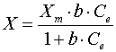
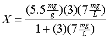
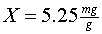
10) What is the average velocity of the packed bed if the superficial tower velocity is 15 m/s and the porosity is 0.50.
11) What is the approach velocity of fluid in a packed bed 5 m deep and has an Empty Bed Contact Time of 25 minutes?
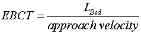
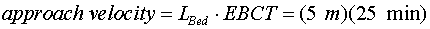
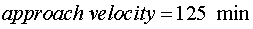
12) Calculate the mass of adsorbent required to adsorb 100 mg of benzene if the K is 1.0 and the 1/n is 1.6 and the feed solution concentration is 0.05 mg/L.

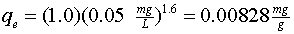
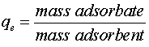
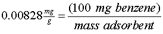
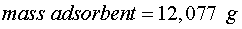
13) With the same numbers as the previous problem, what is the minimum amount of powdered activated carbon dose required to reduce the benzene to 5 μg?
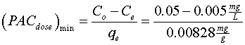
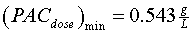
14) What is the Empty Bed Contact Time if the packed bed is 1500 inches deep with the cross-sectional dimensions of 7 ft by 5 ft and fluid is being passed at 100 m3/hr.
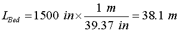
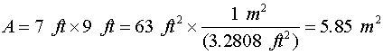
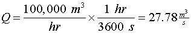
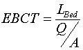
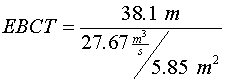
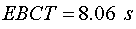
15) Determine how many seconds will it takes for a carbon bed to reach complete exhaustion when the length of the carbon bed is 15 ft and the length of the mass transfer zone is 100 m. It takes 15 minutes for the carbon bed to reach breakthrough point.
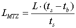
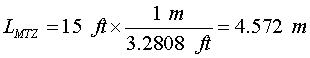
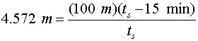
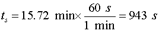
16) What is the porosity when the empty tower velocity is 1,545 m/hr and the average velocity is 2 ft/s?
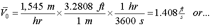

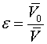
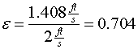
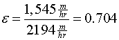
17) Incoming wastewater has a carbon tetrachloride concentration of 450 parts per billion. How much would it cost to remove all of the carbon tetrachloride if activated costs $1.15 per pound in 100,000 gallons of water.
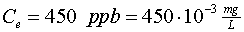

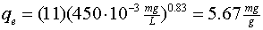

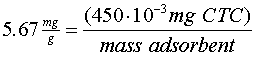
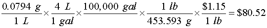
18) There is an unknown substance that is in the water. The following table provides the measured data of equilibrium surface and solution concentrations
|
qe (mg/g) |
Ce (mg/L) |
|
4.47 |
0.001 |
|
8.335 |
0.004 |
|
11.39 |
0.008 |
|
13.67 |
0.012 |
|
16.40 |
0.018 |
what is the Freundlich Adsorption Isotherm Constants, K and 1/n? Research the toxic organic compound present in the water.
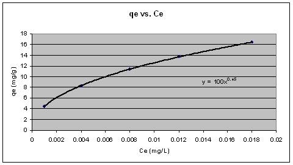
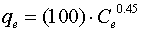
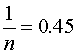
Toluene
19) What is the bed life for a GAC adsorber that removes 75 parts per billion of Trichloroethene in a solution, when the apparent density of the GAC is 2.4 kg/gal?
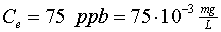
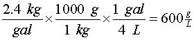
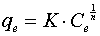
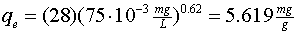
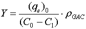

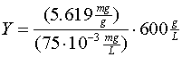
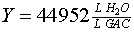
20) With the same information as the previous problem, what is the carbon usage rate for the GAC adsorber.
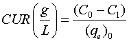
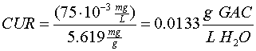